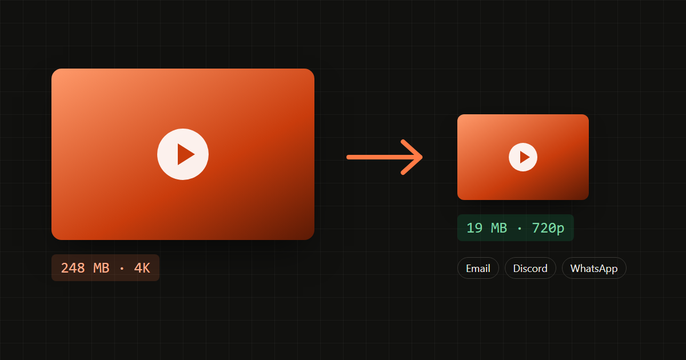

How to Compress a Video for WhatsApp, Email and Discord

Phones now record in 4K by default, which is great for memories and terrible for sharing. A two-minute clip can be several hundred megabytes, and the moment you try to send it you hit a wall: "File too large."
The good news is that most of that size is detail nobody will notice on a phone screen. This guide explains the limits of the apps you use every day, how to pick the right size, and how to shrink a video without it turning into a blurry mess.
1. Know the limit you are aiming for
Each app has its own maximum file size. These are the most common ones as of November 2026:
- Gmail: 25 MB per email you send. Anything bigger is turned into a Google Drive link instead of an attachment.
- Outlook.com: 20 MB for the whole email, including the text, according to Microsoft. Aim a little lower to be safe.
- Discord (free): 20 MB per file. Discord raised this from 10 MB in August 2026. Nitro Basic allows 50 MB and Nitro allows 500 MB.
- WhatsApp: videos sent the normal way are compressed by WhatsApp itself, and even the HD option is capped at 720p. Sending the video as a document keeps the original quality and allows files up to 2 GB.
Email attachments are encoded before they are sent, which makes them roughly a third larger on the way. A 24 MB video can fail a 25 MB limit, so leave some headroom: aim for about 18 MB for Gmail and 14 MB for Outlook.
2. Why videos are so big (and how compression fixes it)
A video's size comes down to three things:
- Length. Twice as long means roughly twice as big.
- Resolution. 4K has four times as many pixels per frame as 1080p and nine times as many as 720p.
- Bitrate. How much data is spent on each second of video. Phones use a high bitrate so the original looks perfect.
Compression lowers the bitrate and, usually, the resolution. It also re-encodes the video with H.264, the format every phone, browser and computer can play, which removes detail the eye barely notices, such as tiny changes in a blue sky or a dark background.
3. Work out the size you can afford
There is a simple formula behind every "compress to X MB" tool:
bitrate (Mbps) ≈ target size (MB) × 8 ÷ length (seconds)
For example, to fit a 60-second clip into 18 MB: 18 × 8 ÷ 60 ≈ 2.4 Mbps for video and sound together. As a rough guide:
- About 2 to 5 Mbps looks good at 720p.
- About 5 to 8 Mbps looks good at 1080p.
- Below about 1 Mbps, use 480p, or the picture will turn blocky.
So a 1-minute clip fits comfortably in an email at 720p, but a 10-minute clip squeezed into 18 MB only gets about 0.24 Mbps. That will look poor at any resolution, and a shared link is the better choice.
4. Step by step: compress a video in your browser
- Open the free Compress Video tool and drop in your video. MP4 and MOV files from iPhone and Android both work.
- Pick a level if there is no strict limit. "Balanced" suits most videos and is often 70–90% smaller with little visible difference on a phone.
- Or choose "Target size" when an app has a hard limit, and type the number or tap a preset such as 10 MB or 25 MB. The tool works out the bitrate from the video's length for you.
- Choose the resolution. 720p is the best all-rounder for sharing, and it makes compression much faster.
- Tick "Remove sound" if the audio doesn't matter, such as a screen recording or a product clip. That leaves more of the size for the picture.
- Press Compress video and download the MP4.
Need a different format, or only the audio? The Video Converter can save to MP4, MOV, WebM, MKV and more, or pull the sound out as an MP3.
5. Tips for the best quality at a small size
- Trim first. Cutting 20 seconds of nothing from the start and end is the easiest saving there is. Most phone galleries can trim a video in a few taps.
- Lower the resolution before the quality. A sharp 720p video looks better than a blocky 1080p one at the same file size.
- Steady footage compresses better. Shaky video, confetti, rain and fast panning all need more data to look good.
- For WhatsApp, send as a document when quality matters, so WhatsApp doesn't compress it a second time. Compress it first if it's very large, so the person receiving it isn't stuck waiting for a huge download.
- Very long videos: for a full talk or a match, upload to a cloud drive or to YouTube as unlisted, and share the link instead.
6. Private by design
Most online video compressors upload your whole video to their servers first. With family videos, school events or work recordings, that is a lot to hand over. PicsConvert compresses the video inside your browser using your own device, so the video never leaves your computer or phone. The trade-off is that speed depends on your device: choosing 720p or 480p makes it several times faster.
Conclusion
Getting a video under a size limit isn't about luck. Know the limit, leave a little headroom, choose 720p for most sharing, and let a target-size setting work out the bitrate for you. For most clips under a couple of minutes, that is enough to email it, post it on Discord or send it on WhatsApp without anyone noticing the difference. Try it with the free Compress Video tool.